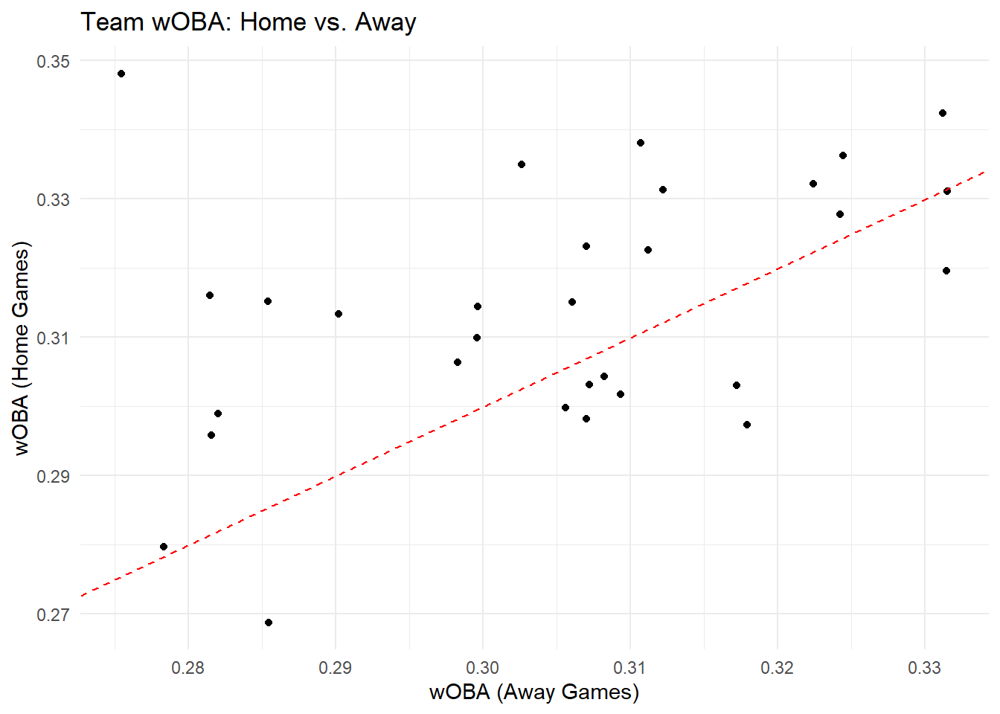
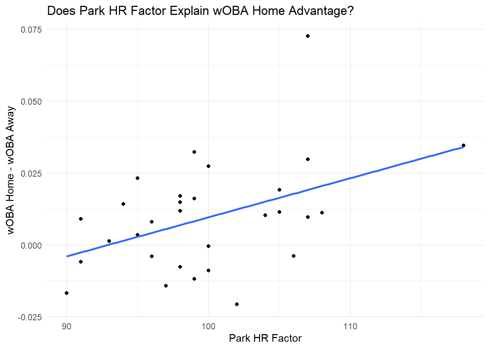

3 Wandi Dlamini - Park Factors EDA
Rows: 130 Columns: 15
── Column specification ────────────────────────────────────────────────────────
Delimiter: ","
chr (1): last_name, first_name
dbl (14): player_id, year, pa, k_percent, bb_percent, woba, xwoba, sweet_spo...
ℹ Use `spec()` to retrieve the full column specification for this data.
ℹ Specify the column types or set `show_col_types = FALSE` to quiet this message.Rows: 30 Columns: 16
── Column specification ────────────────────────────────────────────────────────
Delimiter: ","
chr (1): Tm
dbl (15): Season, PA, BB%, K%, BB/K, AVG, OBP, SLG, OPS, ISO, BABIP, wRC, wR...
ℹ Use `spec()` to retrieve the full column specification for this data.
ℹ Specify the column types or set `show_col_types = FALSE` to quiet this message.Rows: 30 Columns: 16
── Column specification ────────────────────────────────────────────────────────
Delimiter: ","
chr (1): Tm
dbl (15): Season, PA, BB%, K%, BB/K, AVG, OBP, SLG, OPS, ISO, BABIP, wRC, wR...
ℹ Use `spec()` to retrieve the full column specification for this data.
ℹ Specify the column types or set `show_col_types = FALSE` to quiet this message.Rows: 30 Columns: 14
── Column specification ────────────────────────────────────────────────────────
Delimiter: ","
chr (1): Team
dbl (13): Season, Basic, 1B, 2B, 3B, HR, SO, BB, GB, FB, LD, IFFB, FIP
ℹ Use `spec()` to retrieve the full column specification for this data.
ℹ Specify the column types or set `show_col_types = FALSE` to quiet this message.# A tibble: 6 × 15
`last_name, first_name` player_id year pa k_percent bb_percent woba xwoba
<chr> <dbl> <dbl> <dbl> <dbl> <dbl> <dbl> <dbl>
1 Semien, Marcus 543760 2022 724 16.6 7.3 0.317 0.306
2 Pham, Tommy 502054 2022 622 26.8 9 0.304 0.311
3 Wisdom, Patrick 621550 2022 534 34.3 9.9 0.316 0.295
4 Bregman, Alex 608324 2022 656 11.7 13.3 0.358 0.35
5 García, Adolis 666969 2022 657 27.9 6.1 0.324 0.322
6 Kim, Ha-Seong 673490 2022 582 17.2 8.8 0.313 0.309
# ℹ 7 more variables: sweet_spot_percent <dbl>, barrel_batted_rate <dbl>,
# hard_hit_percent <dbl>, avg_best_speed <dbl>, avg_hyper_speed <dbl>,
# whiff_percent <dbl>, swing_percent <dbl># A tibble: 6 × 16
Season Tm PA `BB%` `K%` `BB/K` AVG OBP SLG OPS ISO BABIP
<dbl> <chr> <dbl> <dbl> <dbl> <dbl> <dbl> <dbl> <dbl> <dbl> <dbl> <dbl>
1 2022 LAA 2957 0.0774 0.253 0.306 0.244 0.308 0.417 0.725 0.172 0.298
2 2022 BAL 2974 0.0797 0.226 0.353 0.238 0.308 0.382 0.689 0.143 0.287
3 2022 BOS 3035 0.0748 0.222 0.336 0.272 0.332 0.442 0.773 0.170 0.329
4 2022 CHW 2994 0.0688 0.196 0.350 0.250 0.310 0.383 0.692 0.132 0.291
5 2022 CLE 3014 0.0790 0.177 0.447 0.252 0.321 0.365 0.687 0.113 0.295
6 2022 DET 2893 0.0674 0.233 0.290 0.232 0.290 0.344 0.634 0.112 0.289
# ℹ 4 more variables: wRC <dbl>, wRAA <dbl>, wOBA <dbl>, `wRC+` <dbl># A tibble: 6 × 16
Season Tm PA `BB%` `K%` `BB/K` AVG OBP SLG OPS ISO BABIP
<dbl> <chr> <dbl> <dbl> <dbl> <dbl> <dbl> <dbl> <dbl> <dbl> <dbl> <dbl>
1 2022 LAA 3020 0.0728 0.262 0.278 0.222 0.286 0.364 0.650 0.142 0.280
2 2022 BAL 3075 0.0777 0.233 0.333 0.234 0.303 0.399 0.701 0.165 0.280
3 2022 BOS 3109 0.0807 0.225 0.360 0.244 0.311 0.378 0.689 0.134 0.298
4 2022 CHW 3129 0.0582 0.218 0.267 0.261 0.311 0.391 0.703 0.130 0.316
5 2022 CLE 3149 0.0673 0.187 0.360 0.255 0.311 0.399 0.709 0.144 0.293
6 2022 DET 2977 0.0621 0.249 0.25 0.229 0.283 0.348 0.630 0.118 0.290
# ℹ 4 more variables: wRC <dbl>, wRAA <dbl>, wOBA <dbl>, `wRC+` <dbl># A tibble: 6 × 14
Season Team Basic `1B` `2B` `3B` HR SO BB GB FB LD IFFB
<dbl> <chr> <dbl> <dbl> <dbl> <dbl> <dbl> <dbl> <dbl> <dbl> <dbl> <dbl> <dbl>
1 2022 Ange… 102 100 97 100 107 102 101 99 99 102 93
2 2022 Orio… 98 104 95 102 96 98 98 100 100 101 99
3 2022 Red … 106 104 110 116 99 98 101 104 98 101 101
4 2022 Whit… 101 100 96 84 106 99 102 99 104 99 103
5 2022 Guar… 99 100 101 89 98 101 101 101 96 99 96
6 2022 Tige… 99 100 100 123 93 98 102 100 101 101 108
# ℹ 1 more variable: FIP <dbl>spc_tbl_ [130 × 15] (S3: spec_tbl_df/tbl_df/tbl/data.frame)
$ last_name, first_name: chr [1:130] "Semien, Marcus" "Pham, Tommy" "Wisdom, Patrick" "Bregman, Alex" ...
$ player_id : num [1:130] 543760 502054 621550 608324 666969 ...
$ year : num [1:130] 2022 2022 2022 2022 2022 ...
$ pa : num [1:130] 724 622 534 656 657 582 638 685 507 522 ...
$ k_percent : num [1:130] 16.6 26.8 34.3 11.7 27.9 17.2 9.4 12 23.5 23.2 ...
$ bb_percent : num [1:130] 7.3 9 9.9 13.3 6.1 8.8 9.7 10.1 5.5 7.5 ...
$ woba : num [1:130] 0.317 0.304 0.316 0.358 0.324 0.313 0.341 0.363 0.288 0.347 ...
$ xwoba : num [1:130] 0.306 0.311 0.295 0.35 0.322 0.309 0.312 0.32 0.298 0.323 ...
$ sweet_spot_percent : num [1:130] 32.4 33.2 29.8 36.2 36.9 34 34.6 33.7 39.7 32.7 ...
$ barrel_batted_rate : num [1:130] 6.8 7.9 14.2 7.3 12.9 4.2 1.4 6.6 6.9 10.9 ...
$ hard_hit_percent : num [1:130] 34.9 48.5 46.3 37.8 47.4 32.4 20.8 36.9 36 43.6 ...
$ avg_best_speed : num [1:130] 97.8 102.5 102.2 98.4 102.4 ...
$ avg_hyper_speed : num [1:130] 93 95.8 95.7 93.4 95.8 ...
$ whiff_percent : num [1:130] 20.6 26 36.5 14.9 33.5 19.1 9 15.3 27 27 ...
$ swing_percent : num [1:130] 47.2 42 48.1 40.3 53.5 43.3 38.1 46.3 49.5 47.8 ...
- attr(*, "spec")=
.. cols(
.. `last_name, first_name` = col_character(),
.. player_id = col_double(),
.. year = col_double(),
.. pa = col_double(),
.. k_percent = col_double(),
.. bb_percent = col_double(),
.. woba = col_double(),
.. xwoba = col_double(),
.. sweet_spot_percent = col_double(),
.. barrel_batted_rate = col_double(),
.. hard_hit_percent = col_double(),
.. avg_best_speed = col_double(),
.. avg_hyper_speed = col_double(),
.. whiff_percent = col_double(),
.. swing_percent = col_double()
.. )
- attr(*, "problems")=<externalptr> spc_tbl_ [30 × 16] (S3: spec_tbl_df/tbl_df/tbl/data.frame)
$ Season: num [1:30] 2022 2022 2022 2022 2022 ...
$ Tm : chr [1:30] "LAA" "BAL" "BOS" "CHW" ...
$ PA : num [1:30] 2957 2974 3035 2994 3014 ...
$ BB% : num [1:30] 0.0774 0.0797 0.0748 0.0688 0.079 ...
$ K% : num [1:30] 0.253 0.226 0.222 0.196 0.177 ...
$ BB/K : num [1:30] 0.306 0.353 0.336 0.35 0.447 ...
$ AVG : num [1:30] 0.244 0.238 0.272 0.25 0.252 ...
$ OBP : num [1:30] 0.308 0.308 0.332 0.31 0.321 ...
$ SLG : num [1:30] 0.417 0.382 0.442 0.383 0.365 ...
$ OPS : num [1:30] 0.725 0.689 0.773 0.692 0.687 ...
$ ISO : num [1:30] 0.172 0.143 0.17 0.132 0.113 ...
$ BABIP : num [1:30] 0.298 0.287 0.329 0.291 0.295 ...
$ wRC : num [1:30] 352 324 408 329 326 ...
$ wRAA : num [1:30] 13.7 -15.7 61.1 -13.2 -19.1 ...
$ wOBA : num [1:30] 0.315 0.303 0.335 0.304 0.302 ...
$ wRC+ : num [1:30] 101.7 101.6 107.5 96.2 98 ...
- attr(*, "spec")=
.. cols(
.. Season = col_double(),
.. Tm = col_character(),
.. PA = col_double(),
.. `BB%` = col_double(),
.. `K%` = col_double(),
.. `BB/K` = col_double(),
.. AVG = col_double(),
.. OBP = col_double(),
.. SLG = col_double(),
.. OPS = col_double(),
.. ISO = col_double(),
.. BABIP = col_double(),
.. wRC = col_double(),
.. wRAA = col_double(),
.. wOBA = col_double(),
.. `wRC+` = col_double()
.. )
- attr(*, "problems")=<externalptr> spc_tbl_ [30 × 16] (S3: spec_tbl_df/tbl_df/tbl/data.frame)
$ Season: num [1:30] 2022 2022 2022 2022 2022 ...
$ Tm : chr [1:30] "LAA" "BAL" "BOS" "CHW" ...
$ PA : num [1:30] 3020 3075 3109 3129 3149 ...
$ BB% : num [1:30] 0.0728 0.0777 0.0807 0.0582 0.0673 ...
$ K% : num [1:30] 0.262 0.233 0.225 0.218 0.187 ...
$ BB/K : num [1:30] 0.278 0.333 0.36 0.267 0.36 ...
$ AVG : num [1:30] 0.222 0.234 0.244 0.261 0.255 ...
$ OBP : num [1:30] 0.286 0.303 0.311 0.311 0.311 ...
$ SLG : num [1:30] 0.364 0.399 0.378 0.391 0.399 ...
$ OPS : num [1:30] 0.65 0.701 0.689 0.703 0.709 ...
$ ISO : num [1:30] 0.142 0.165 0.134 0.13 0.144 ...
$ BABIP : num [1:30] 0.28 0.28 0.298 0.316 0.293 ...
$ wRC : num [1:30] 287 345 338 354 359 ...
$ wRAA : num [1:30] -58.55 -6.13 -17.92 -3.82 -0.66 ...
$ wOBA : num [1:30] 0.285 0.307 0.303 0.308 0.309 ...
$ wRC+ : num [1:30] 84.4 99.9 96.6 100.6 101.5 ...
- attr(*, "spec")=
.. cols(
.. Season = col_double(),
.. Tm = col_character(),
.. PA = col_double(),
.. `BB%` = col_double(),
.. `K%` = col_double(),
.. `BB/K` = col_double(),
.. AVG = col_double(),
.. OBP = col_double(),
.. SLG = col_double(),
.. OPS = col_double(),
.. ISO = col_double(),
.. BABIP = col_double(),
.. wRC = col_double(),
.. wRAA = col_double(),
.. wOBA = col_double(),
.. `wRC+` = col_double()
.. )
- attr(*, "problems")=<externalptr> spc_tbl_ [30 × 14] (S3: spec_tbl_df/tbl_df/tbl/data.frame)
$ Season: num [1:30] 2022 2022 2022 2022 2022 ...
$ Team : chr [1:30] "Angels" "Orioles" "Red Sox" "White Sox" ...
$ Basic : num [1:30] 102 98 106 101 99 99 105 100 100 96 ...
$ 1B : num [1:30] 100 104 104 100 100 100 105 99 98 100 ...
$ 2B : num [1:30] 97 95 110 96 101 100 109 104 97 100 ...
$ 3B : num [1:30] 100 102 116 84 89 123 116 94 85 100 ...
$ HR : num [1:30] 107 96 99 106 98 93 95 99 107 90 ...
$ SO : num [1:30] 102 98 98 99 101 98 96 101 101 100 ...
$ BB : num [1:30] 101 98 101 102 101 102 101 102 100 100 ...
$ GB : num [1:30] 99 100 104 99 101 100 104 99 98 100 ...
$ FB : num [1:30] 99 100 98 104 96 101 101 102 104 100 ...
$ LD : num [1:30] 102 101 101 99 99 101 107 97 98 101 ...
$ IFFB : num [1:30] 93 99 101 103 96 108 98 103 102 101 ...
$ FIP : num [1:30] 103 98 101 103 99 99 100 100 103 97 ...
- attr(*, "spec")=
.. cols(
.. Season = col_double(),
.. Team = col_character(),
.. Basic = col_double(),
.. `1B` = col_double(),
.. `2B` = col_double(),
.. `3B` = col_double(),
.. HR = col_double(),
.. SO = col_double(),
.. BB = col_double(),
.. GB = col_double(),
.. FB = col_double(),
.. LD = col_double(),
.. IFFB = col_double(),
.. FIP = col_double()
.. )
- attr(*, "problems")=<externalptr> last_name, first_name player_id year pa
Length:130 Min. :443558 Min. :2022 Min. :505.0
Class :character 1st Qu.:571988 1st Qu.:2022 1st Qu.:550.2
Mode :character Median :622164 Median :2022 Median :590.0
Mean :607830 Mean :2022 Mean :597.4
3rd Qu.:663574 3rd Qu.:2022 3rd Qu.:644.0
Max. :683734 Max. :2022 Max. :724.0
k_percent bb_percent woba xwoba
Min. : 7.10 Min. : 3.300 Min. :0.2450 Min. :0.2670
1st Qu.:16.43 1st Qu.: 6.800 1st Qu.:0.3110 1st Qu.:0.3060
Median :19.20 Median : 8.650 Median :0.3280 Median :0.3260
Mean :19.93 Mean : 8.711 Mean :0.3312 Mean :0.3281
3rd Qu.:24.10 3rd Qu.:10.275 3rd Qu.:0.3500 3rd Qu.:0.3465
Max. :34.30 Max. :20.300 Max. :0.4580 Max. :0.4630
sweet_spot_percent barrel_batted_rate hard_hit_percent avg_best_speed
Min. :25.50 Min. : 0.700 Min. :14.90 Min. : 93.05
1st Qu.:31.80 1st Qu.: 6.000 1st Qu.:36.23 1st Qu.: 98.65
Median :34.10 Median : 8.200 Median :41.50 Median :100.28
Mean :34.12 Mean : 8.613 Mean :40.87 Mean :100.19
3rd Qu.:36.38 3rd Qu.:11.050 3rd Qu.:45.58 3rd Qu.:101.63
Max. :42.90 Max. :26.500 Max. :61.80 Max. :107.11
avg_hyper_speed whiff_percent swing_percent
Min. :90.55 Min. : 7.10 Min. :35.50
1st Qu.:93.37 1st Qu.:20.07 1st Qu.:43.88
Median :94.42 Median :23.50 Median :48.10
Mean :94.38 Mean :23.41 Mean :47.53
3rd Qu.:95.15 3rd Qu.:27.35 3rd Qu.:50.75
Max. :99.05 Max. :37.60 Max. :57.00 Season Tm PA BB%
Min. :2022 Length:30 Min. :2878 Min. :0.06740
1st Qu.:2022 Class :character 1st Qu.:2946 1st Qu.:0.07778
Median :2022 Mode :character Median :2966 Median :0.08329
Mean :2022 Mean :2971 Mean :0.08444
3rd Qu.:2022 3rd Qu.:2996 3rd Qu.:0.09071
Max. :2022 Max. :3106 Max. :0.10535
K% BB/K AVG OBP
Min. :0.1768 Min. :0.2897 Min. :0.2080 Min. :0.2775
1st Qu.:0.2000 1st Qu.:0.3501 1st Qu.:0.2363 1st Qu.:0.3074
Median :0.2244 Median :0.3840 Median :0.2451 Median :0.3210
Mean :0.2195 Mean :0.3874 Mean :0.2458 Mean :0.3164
3rd Qu.:0.2323 3rd Qu.:0.4204 3rd Qu.:0.2558 3rd Qu.:0.3257
Max. :0.2556 Max. :0.4972 Max. :0.2827 Max. :0.3455
SLG OPS ISO BABIP
Min. :0.3260 Min. :0.6035 Min. :0.1116 Min. :0.2541
1st Qu.:0.3778 1st Qu.:0.6870 1st Qu.:0.1399 1st Qu.:0.2800
Median :0.3978 Median :0.7155 Median :0.1529 Median :0.2911
Mean :0.4014 Mean :0.7178 Mean :0.1556 Mean :0.2917
3rd Qu.:0.4313 3rd Qu.:0.7576 3rd Qu.:0.1734 3rd Qu.:0.3031
Max. :0.4578 Max. :0.8033 Max. :0.1989 Max. :0.3285
wRC wRAA wOBA wRC+
Min. :235.2 Min. :-93.87 Min. :0.2688 Min. : 80.07
1st Qu.:322.7 1st Qu.:-18.29 1st Qu.:0.3020 1st Qu.: 95.08
Median :352.2 Median : 11.94 Median :0.3148 Median :104.23
Mean :350.9 Mean : 11.25 Mean :0.3143 Mean :103.35
3rd Qu.:387.1 3rd Qu.: 48.39 3rd Qu.:0.3303 3rd Qu.:112.88
Max. :450.1 Max. : 94.96 Max. :0.3481 Max. :125.40 Season Tm PA BB%
Min. :2022 Length:30 Min. :2968 Min. :0.05817
1st Qu.:2022 Class :character 1st Qu.:3065 1st Qu.:0.07191
Median :2022 Mode :character Median :3096 Median :0.07820
Mean :2022 Mean :3098 Mean :0.07866
3rd Qu.:2022 3rd Qu.:3145 3rd Qu.:0.08365
Max. :2022 Max. :3244 Max. :0.10080
K% BB/K AVG OBP
Min. :0.1870 Min. :0.2500 Min. :0.2163 Min. :0.2798
1st Qu.:0.2179 1st Qu.:0.2871 1st Qu.:0.2289 1st Qu.:0.2959
Median :0.2327 Median :0.3542 Median :0.2366 Median :0.3091
Mean :0.2291 Mean :0.3469 Mean :0.2394 Mean :0.3064
3rd Qu.:0.2427 3rd Qu.:0.3824 3rd Qu.:0.2506 3rd Qu.:0.3169
Max. :0.2736 Max. :0.4614 Max. :0.2662 Max. :0.3339
SLG OPS ISO BABIP
Min. :0.3365 Min. :0.6207 Min. :0.1114 Min. :0.2698
1st Qu.:0.3654 1st Qu.:0.6617 1st Qu.:0.1323 1st Qu.:0.2787
Median :0.3904 Median :0.6987 Median :0.1501 Median :0.2867
Mean :0.3881 Mean :0.6945 Mean :0.1487 Mean :0.2885
3rd Qu.:0.4034 3rd Qu.:0.7185 3rd Qu.:0.1621 3rd Qu.:0.2968
Max. :0.4350 Max. :0.7614 Max. :0.1847 Max. :0.3164
wRC wRAA wOBA wRC+
Min. :261.1 Min. :-81.860 Min. :0.2755 Min. : 74.92
1st Qu.:308.4 1st Qu.:-42.897 1st Qu.:0.2922 1st Qu.: 88.72
Median :346.5 Median : -6.817 Median :0.3070 Median : 98.04
Mean :343.0 Mean :-11.208 Mean :0.3048 Mean : 96.62
3rd Qu.:375.3 3rd Qu.: 15.703 3rd Qu.:0.3160 3rd Qu.:103.67
Max. :426.4 Max. : 55.509 Max. :0.3315 Max. :116.91 Season Team Basic 1B
Min. :2022 Length:30 Min. : 94.0 Min. : 96.0
1st Qu.:2022 Class :character 1st Qu.: 98.0 1st Qu.: 98.0
Median :2022 Mode :character Median : 99.5 Median :100.0
Mean :2022 Mean :100.0 Mean :100.1
3rd Qu.:2022 3rd Qu.:101.0 3rd Qu.:101.8
Max. :2022 Max. :113.0 Max. :108.0
2B 3B HR SO
Min. : 93.00 Min. : 79.0 Min. : 90.00 Min. : 96.00
1st Qu.: 97.00 1st Qu.: 89.5 1st Qu.: 96.00 1st Qu.: 98.00
Median : 99.00 Median :100.0 Median : 99.00 Median :100.00
Mean : 99.97 Mean : 99.8 Mean : 99.87 Mean : 99.93
3rd Qu.:103.00 3rd Qu.:108.2 3rd Qu.:104.75 3rd Qu.:101.75
Max. :110.00 Max. :135.0 Max. :118.00 Max. :103.00
BB GB FB LD IFFB
Min. : 96.00 Min. : 96 Min. : 96.00 Min. : 96 Min. : 93.0
1st Qu.: 98.25 1st Qu.: 99 1st Qu.: 98.25 1st Qu.: 98 1st Qu.: 96.5
Median :100.00 Median :100 Median :100.00 Median :100 Median :100.0
Mean :100.03 Mean :100 Mean : 99.93 Mean :100 Mean :100.1
3rd Qu.:101.00 3rd Qu.:101 3rd Qu.:101.00 3rd Qu.:101 3rd Qu.:103.0
Max. :103.00 Max. :107 Max. :104.00 Max. :109 Max. :110.0
FIP
Min. : 96.00
1st Qu.: 98.00
Median :100.00
Mean : 99.97
3rd Qu.:101.75
Max. :106.00 # Mutate the expectedPerformance data to keep only the relevant columns
expectedPerformanceClean <- expectedPerformance |>
select(year, `last_name, first_name`, woba, xwoba)
# Check the result
head(expectedPerformanceClean)# A tibble: 6 × 4
year `last_name, first_name` woba xwoba
<dbl> <chr> <dbl> <dbl>
1 2022 Semien, Marcus 0.317 0.306
2 2022 Pham, Tommy 0.304 0.311
3 2022 Wisdom, Patrick 0.316 0.295
4 2022 Bregman, Alex 0.358 0.35
5 2022 García, Adolis 0.324 0.322
6 2022 Kim, Ha-Seong 0.313 0.309# A tibble: 6 × 3
Season Tm wOBA
<dbl> <chr> <dbl>
1 2022 LAA 0.315
2 2022 BAL 0.303
3 2022 BOS 0.335
4 2022 CHW 0.304
5 2022 CLE 0.302
6 2022 DET 0.280# A tibble: 6 × 3
Season Tm wOBA
<dbl> <chr> <dbl>
1 2022 LAA 0.285
2 2022 BAL 0.307
3 2022 BOS 0.303
4 2022 CHW 0.308
5 2022 CLE 0.309
6 2022 DET 0.278# A tibble: 6 × 3
Season Team HR
<dbl> <chr> <dbl>
1 2022 Angels 107
2 2022 Orioles 96
3 2022 Red Sox 99
4 2022 White Sox 106
5 2022 Guardians 98
6 2022 Tigers 93- Team-Level Analysis (Park Factors + Home/Away Splits)
A. Compare Home vs. Away Team wOBA
# Merge home and away splits by Season and Team
team_woba <- homeSplitClean |>
rename(wOBA_home = wOBA) |>
inner_join(awaySplitClean |> rename(wOBA_away = wOBA),
by = c("Season", "Tm"))
# Plotting Home vs. Away wOBA
ggplot(team_woba, aes(x = wOBA_away, y = wOBA_home)) +
geom_point() +
geom_abline(slope = 1, intercept = 0, linetype = "dashed", color = "red") +
labs(title = "Team wOBA: Home vs. Away",
x = "wOBA (Away Games)",
y = "wOBA (Home Games)") +
theme_minimal()
B. Join Park Factors (HR) to Team wOBA Difference
team_name_key <- tibble(
Tm = c("ARI", "ATL", "BAL", "BOS", "CHC", "CHW", "CIN", "CLE", "COL", "DET",
"HOU", "KCR", "LAA", "LAD", "MIA", "MIL", "MIN", "NYM", "NYY", "OAK",
"PHI", "PIT", "SDP", "SEA", "SFG", "STL", "TBR", "TEX", "TOR", "WSN"),
Team = c("Diamondbacks", "Braves", "Orioles", "Red Sox", "Cubs", "White Sox", "Reds", "Guardians", "Rockies",
"Tigers", "Astros", "Royals", "Angels", "Dodgers", "Marlins", "Brewers", "Twins", "Mets", "Yankees",
"Athletics", "Phillies", "Pirates", "Padres", "Mariners", "Giants", "Cardinals", "Rays", "Rangers",
"Blue Jays", "Nationals")
)ggplot(team_woba_with_hr, aes(x = HR, y = wOBA_diff)) +
geom_point() +
geom_smooth(method = "lm", se = FALSE) +
labs(title = "Does Park HR Factor Explain wOBA Home Advantage?",
x = "Park HR Factor",
y = "wOBA Home - wOBA Away") +
theme_minimal()`geom_smooth()` using formula = 'y ~ x'
What is wOBA Home Advantage? wOBA (weighted On-Base Average) is a statistic that measures a player’s or team’s overall offensive production, factoring in how valuable different outcomes (like walks, singles, home runs, etc.) are.
wOBA Home Advantage refers to the difference in wOBA between a team’s home and away games. A positive value means the team performs better offensively at home, and a negative value means they perform better away.
The Role of the Park HR Factor: The Park HR Factor is a measure of how friendly a particular stadium is to home runs. A higher HR factor means the park is more likely to produce home runs, either because of the park’s dimensions (short fences, high altitude, etc.) or environmental factors (such as wind patterns or temperature).
For example:
A high HR factor (e.g., Coors Field in Colorado) means that home runs are easier to hit, leading to more home runs in games played there.
A low HR factor (e.g., AT&T Park in San Francisco) means home runs are harder to come by, so teams are less likely to hit them there.
Home Team Advantage and the HR Factor: When we say “teams playing in parks with higher HR factors tend to have a larger home wOBA advantage”, here’s why it makes sense:
Home Team Familiarity:
When a team plays at home, they are more familiar with the park’s conditions (the size of the fences, the altitude, the wind patterns, etc.) than when they play on the road.
If the home park has a high HR factor, the home team is more likely to have players who are accustomed to taking advantage of those conditions. For example, they may have batters who are better at hitting home runs in that stadium.
Stadium-Specific Factors:
A higher HR factor means that the park’s dimensions or other characteristics (e.g., higher altitude or more favorable hitting conditions) tend to favor home runs. This gives the home team a unique advantage because:
They’re used to these conditions and might know how to better position themselves for successful home run-hitting.
Opposing teams, however, might be less accustomed to these conditions and may struggle more to hit home runs when playing away.
Increased Offensive Output:
In a park with a high HR factor, home runs become a significant part of the offensive output. Home teams, who are familiar with how to hit home runs in those conditions, might hit more home runs than away teams.
Home runs are an essential contributor to wOBA because they provide extra bases and are weighted highly in the formula. Teams that hit more home runs at home will likely see a higher wOBA at home than on the road.
Psychological/Environmental Factors:
Players might also feel more confident or relaxed in their home stadium, which could lead to better performance. The home crowd, the comfort of familiar surroundings, and the ability to adjust to park-specific quirks (such as how the ball travels) may all play a role in enhancing a team’s home offensive output.
When facing an opposing pitcher who is not familiar with the stadium’s dimensions or conditions, the home team might have a better opportunity to exploit these factors (e.g., hitting home runs more effectively).
Interpretation of a Positive Slope: When we see a positive slope in the scatter plot of Park HR Factor (x-axis) vs. wOBA Home Advantage (y-axis), it suggests that as the Park HR Factor increases, the home wOBA advantage also increases. In other words, parks that are more home run-friendly (have a higher HR factor) tend to have a larger home wOBA advantage.
Understanding the Implications: Higher HR Factor → More Home Runs at Home:
A higher HR factor indicates that the stadium is more favorable for hitting home runs. This suggests that in parks with a higher HR factor, home runs are more frequent.
As home runs are a valuable component of wOBA (since they provide more bases and contribute significantly to a team’s offensive output), teams playing in home run-friendly parks are likely to see a larger wOBA advantage at home.
Home Team Exploiting Home Field:
The positive slope implies that home teams are better able to exploit the park’s home run advantages. They are more familiar with the park’s dimensions and environmental factors (like altitude or wind), which allow them to take better advantage of the home run-friendly conditions.
As a result, teams playing in these high HR factor parks may see a larger wOBA at home compared to when they play away games, where the environmental conditions may not favor home run hitting as much.
The Home Field Advantage is Amplified:
The positive relationship suggests that in parks where home runs are more likely to happen, the home team’s offensive output (wOBA) benefits disproportionately. The home wOBA advantage becomes more pronounced.
Teams might have players who are better at hitting home runs in their own park (because of familiarity or park-specific factors), and that gives them an edge offensively when playing at home.